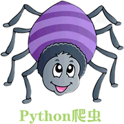
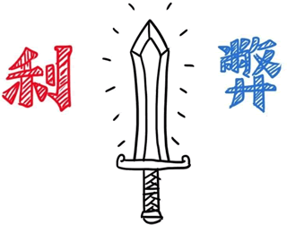

网络爬虫是什么
网络爬虫又称网络蜘蛛、网络机器人，它是一种按照一定的规则自动浏览、检索网页信息的程序或者脚本。网络爬虫能够自动请求网页，并将所需要的数据抓取下来。通过对抓取的数据进行处理，从而提取出有价值的信息。
百度搜索引擎，其实可以更形象地称之为百度蜘蛛（Baiduspider），它每天会在海量的互联网信息中爬取优质的信息，并进行收录。当用户通过百度检索关键词时，百度首先会对用户输入的关键词进行分析，然后从收录的网页中找出相关的网页，并按照排名规则对网页进行排序，最后将排序后的结果呈现给用户。在这个过程中百度蜘蛛起到了非常想关键的作用。
百度的工程师们为“百度蜘蛛”编写了相应的爬虫算法，通过应用这些算法使得“百度蜘蛛”可以实现相应搜索策略，比如筛除重复网页、筛选优质网页等等。应用不同的算法，爬虫的运行效率，以及爬取结果都会有所差异。
通用网络爬虫：是搜索引擎的重要组成部分，上面已经进行了介绍，这里就不再赘述。通用网络爬虫需要遵守 robots 协议，网站通过此协议告诉搜索引擎哪些页面可以抓取，哪些页面不允许抓取。
增量式网络爬虫：是指对已下载网页采取增量式更新，它是一种只爬取新产生的或者已经发生变化网页的爬虫程序，能够在一定程度上保证所爬取的页面是最新的页面。
为了限制爬虫带来的危险，大多数网站都有良好的反爬措施，并通过 robots.txt 协议做了进一步说明，下面是淘宝网 robots.txt 的内容：
PHP：对多线程、异步支持不是很好，并发处理能力较弱；Java 也经常用来写爬虫程序，但是 Java 语言本身很笨重，代码量很大，因此它对于初学者而言，入门的门槛较高；C/C++ 运行效率虽然很高，但是学习和开发成本高。写一个小型的爬虫程序就可能花费很长的时间。
而 Python 语言，其语法优美、代码简洁、开发效率高、支持多个爬虫模块，比如 urllib、requests、Bs4 等。Python 的请求模块和解析模块丰富成熟，并且还提供了强大的 Scrapy 框架，让编写爬虫程序变得更为简单。因此使用 Python 编写爬虫程序是个非常不错的选择。
当然也不局限于上述一种流程。编写爬虫程序，需要您具备较好的 Python 编程功底，这样在编写的过程中您才会得心应手。爬虫程序需要尽量伪装成人访问网站的样子，而非机器访问，否则就会被网站的反爬策略限制，甚至直接封杀 IP，相关知识会在后续内容介绍。
认识爬虫
我们所熟悉的一系列搜索引擎都是大型的网络爬虫，比如百度、搜狗、360浏览器、谷歌搜索等等。每个搜索引擎都拥有自己的爬虫程序，比如 360 浏览器的爬虫称作 360Spider，搜狗的爬虫叫做 Sogouspider。

百度搜索引擎，其实可以更形象地称之为百度蜘蛛（Baiduspider），它每天会在海量的互联网信息中爬取优质的信息，并进行收录。当用户通过百度检索关键词时，百度首先会对用户输入的关键词进行分析，然后从收录的网页中找出相关的网页，并按照排名规则对网页进行排序，最后将排序后的结果呈现给用户。在这个过程中百度蜘蛛起到了非常想关键的作用。
百度的工程师们为“百度蜘蛛”编写了相应的爬虫算法，通过应用这些算法使得“百度蜘蛛”可以实现相应搜索策略，比如筛除重复网页、筛选优质网页等等。应用不同的算法，爬虫的运行效率，以及爬取结果都会有所差异。
爬虫分类
爬虫可分为三大类：通用网络爬虫、聚焦网络爬虫、增量式网络爬虫。通用网络爬虫：是搜索引擎的重要组成部分，上面已经进行了介绍，这里就不再赘述。通用网络爬虫需要遵守 robots 协议，网站通过此协议告诉搜索引擎哪些页面可以抓取，哪些页面不允许抓取。
robots 协议：是一种“约定俗称”的协议，并不具备法律效力，它体现了互联网人的“契约精神”。行业从业者会自觉遵守该协议，因此它又被称为“君子协议”。
聚焦网络爬虫：是面向特定需求的一种网络爬虫程序。它与通用爬虫的区别在于，聚焦爬虫在实施网页抓取的时候会对网页内容进行筛选和处理，尽量保证只抓取与需求相关的网页信息。聚焦网络爬虫极大地节省了硬件和网络资源，由于保存的页面数量少所以更新速度很快，这也很好地满足一些特定人群对特定领域信息的需求。增量式网络爬虫：是指对已下载网页采取增量式更新，它是一种只爬取新产生的或者已经发生变化网页的爬虫程序，能够在一定程度上保证所爬取的页面是最新的页面。
爬虫应用
随着网络的迅速发展，万维网成为大量信息的载体，如何有效地提取并利用这些信息成为一个巨大的挑战，因此爬虫应运而生，它不仅能够被使用在搜索引擎领域，而且在大数据分析，以及商业领域都得到了大规模的应用。1) 数据分析
在数据分析领域，网络爬虫通常是搜集海量数据的必备工具。对于数据分析师而言，要进行数据分析，首先要有数据源，而学习爬虫，就可以获取更多的数据源。在采集过程中，数据分析师可以按照自己目的去采集更有价值的数据，而过滤掉那些无效的数据。2) 商业领域
对于企业而言，及时地获取市场动态、产品信息至关重要。企业可以通过第三方平台购买数据，比如贵阳大数据交易所、数据堂等，当然如果贵公司有一个爬虫工程师的话，就可通过爬虫的方式取得想要的信息。爬虫是一把双刃剑
爬虫是一把双刃剑，它给我们带来便利的同时，也给网络安全带来了隐患。有些不法分子利用爬虫在网络上非法搜集网民信息，或者利用爬虫恶意攻击他人网站，从而导致网站瘫痪的严重后果。

为了限制爬虫带来的危险，大多数网站都有良好的反爬措施，并通过 robots.txt 协议做了进一步说明，下面是淘宝网 robots.txt 的内容：
User-agent: Baiduspider Disallow: /baidu Disallow: /s? Disallow: /ulink? Disallow: /link? Disallow: /home/news/data/ Disallow: /bh ..... User-agent: * Disallow: /从协议内容可以看出，淘宝网对不能被抓取的页面做了规定。因此大家在使用爬虫的时候，要自觉遵守 robots 协议，不要非法获取他人信息，或者做一些危害他人网站的事情。
为什么用Python做爬虫
首先您应该明确，不止 Python 这一种语言可以做爬虫，诸如 PHP、Java、C/C++ 都可以用来写爬虫程序，但是相比较而言 Python 做爬虫是最简单的。下面对它们的优劣势做简单对比：PHP：对多线程、异步支持不是很好，并发处理能力较弱；Java 也经常用来写爬虫程序，但是 Java 语言本身很笨重，代码量很大，因此它对于初学者而言，入门的门槛较高；C/C++ 运行效率虽然很高，但是学习和开发成本高。写一个小型的爬虫程序就可能花费很长的时间。
而 Python 语言，其语法优美、代码简洁、开发效率高、支持多个爬虫模块，比如 urllib、requests、Bs4 等。Python 的请求模块和解析模块丰富成熟，并且还提供了强大的 Scrapy 框架，让编写爬虫程序变得更为简单。因此使用 Python 编写爬虫程序是个非常不错的选择。
编写爬虫的流程
爬虫程序与其他程序不同，它的的思维逻辑一般都是相似的， 所以无需我们在逻辑方面花费大量的时间。下面对 Python 编写爬虫程序的流程做简单地说明：- 先由 urllib 模块的 request 方法打开 URL 得到网页 HTML 对象。
- 使用浏览器打开网页源代码分析网页结构以及元素节点。
- 通过 Beautiful Soup 或则正则表达式提取数据。
- 存储数据到本地磁盘或数据库。
当然也不局限于上述一种流程。编写爬虫程序，需要您具备较好的 Python 编程功底，这样在编写的过程中您才会得心应手。爬虫程序需要尽量伪装成人访问网站的样子，而非机器访问，否则就会被网站的反爬策略限制，甚至直接封杀 IP，相关知识会在后续内容介绍。
注意：上述流程涉及的模块，在后续内容会做详细介绍。
关注公众号「站长严长生」，在手机上阅读所有教程，随时随地都能学习。内含一款搜索神器，免费下载全网书籍和视频。

微信扫码关注公众号